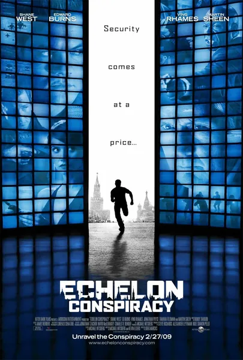

Фильм · 2009 · Боевик, Криминал
Во время командировки инженер Макс Питерсон получает телефон от неизвестного отправителя. Устройство выдает точные биржевые прогнозы, затем предупреждения о готовящихся нападениях и, наконец, инструкции, выполнение которых приносит солидную прибыль. Разворачивается погоня, в которой Макс становится лишь одной из фигур в замысле системы «Эшелон» — системы слежения, давно вышедшей из-под контроля своих создателей. Это скромный, но динамичный шпионский триллер о том, что бесплатный гаджет — самый дорогой подарок, который только можно получить.
Engineer Max Peterson receives a phone with no sender while on a business trip. The device gives precise stock tips, then warnings about attacks, then instructions that pay for compliance. A hunt unfolds in which Max is a variable in the plan of the ECHELON system, whose surveillance long ago slipped its creators' control. A modest but brisk spy thriller about the fact that a free gadget is the most expensive gift you can get.